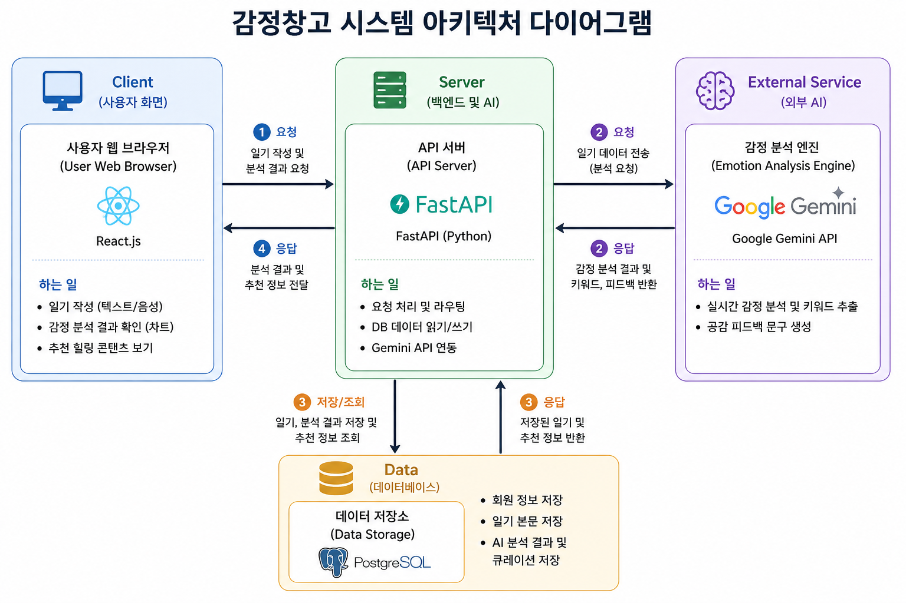

1. 프로젝트 개요
Indirect Path
추적성 중심
식별 경로 최적화
본 프로젝트는 유저가 기록한 일기 본문과 익명 커뮤니티의 텍스트 데이터를 수집하여 심리적 정서 상태를 정량화하고, 축적된 데이터를 바탕으로 통계 분석 리포트를 제공하는 웹 서비스 백엔드 인프라입니다. 외부 대규모 언어 모델(LLM) API의 통합 오케스트레이션 레이어 구축부터, 외부 인프라 마비 시 가동되는 백업 엔진 설계, 무결성을 보장하는 관계형 데이터베이스(RDBMS) 모델링 및 쿼리 라우팅 최적화를 전담하여 시스템의 안정성과 확장성을 증명하였습니다.
2. 핵심 담당 역할 및 아키텍처 설계
AI 파이프라인의 안전한 구조화와 대용량 텍스트 처리 환경에서 유기적으로 구동되는 데이터 엔지니어링 계층을 하이 레벨 아키텍처로 구현했습니다.
- Gemini 2.0 Flash 기반 AI 정서 분석 엔진 구축 (AI 부문): 자연어 처리(NLP) 파이프라인을 개발하여 사용자의 텍스트 문맥을 실시간 계량화했습니다. 외부 LLM의 자유 응답이 유발하는 시스템 예외를 원천 차단하고자
Few-shot 프롬프트 엔지니어링 기술을 도입했으며, 분석 데이터를 DB 표준 규격인 JSON 포맷 및 고유 emotion_code로 분류·매핑하는 규칙을 최적화했습니다. 프롬프트에 '따뜻한 심리 상담사' 페르소나를 주입하여 생성된 위로 문구를 데이터베이스 영속성 계층에 동적 기록하는 흐름을 완성했습니다.
- 관계형 데이터베이스(RDBMS) 모델링 및 경로 최적화 (DB 부문): 서비스 데이터의 무결성을 확보하기 위해 PostgreSQL 환경에서
User ➔ Diary ➔ Analysis ➔ EmotionCode 간의 체계적인 논리 데이터 모델을 구축했습니다. 사용자와 감정 코드를 직접 잇지 않고 추적성 중심의 간접 식별 경로로 설계하여, 정서 이력(History)의 무결성을 보존하는 동시에 마이페이지 감정 리포트 연산용 쿼리 속도를 대폭 개선했습니다.

▲ React.js - FastAPI - PostgreSQL - Gemini API 간의 실시간 정서 분석 및 데이터 파이프라인 구조도
3. 기술적 도전 과제 및 트러블슈팅 (Troubleshooting)
이슈 01: 외부 AI 인프라 의존성으로 인한 단일 장애점(SPOF) 리스크 방어
[상황 및 원인] 외부 AI API 연동 중 급격한 트래픽 쏠림으로 인한 구글 서버 제한(`HTTP 429`)이나 할당량(Quota) 초과 장애가 발생할 경우, 일기 저장 및 분석 파이프라인 전체가 멈춰 서며 웹 서비스 전체가 마비되는 단일 장애점(SPOF) 리스크가 존재했습니다.
[해결 방안 및 성과]
인프라 에러 감지 즉시 서버 단에서 예외 분기가 트리거되도록 안전 메커니즘을 수립하고, Python의 any() 논리 구조 기반 내장 키워드 스캐너 백업 엔진을 직접 구현했습니다. API 마비 시 일기 본문 속 정서 유발 키워드를 자체 스캔하고, 매칭 실패 시 기본 도메인인 '평온' 데이터 및 중립 마스코트 이미지 경로(`mood_map.get`)를 강제로 매핑 통합하는 무중단 Fallback 아키텍처를 완성했습니다.
이슈 02: 데이터 삭제 트랜잭션 충돌 및 커뮤니티 메인 로드 I/O 병목 최적화
[상황 및 원인] 첫째, 익명 커뮤니티 내 탈퇴/제재 유저 처리 시 외래키(FK) 무결성 제약조건 위배로 데이터 정합성이 깨지는 크래시가 발생했습니다. 둘째, 커뮤니티 메인화면 접근 시 전체 기록을 스캔하느라 DB 메모리 I/O 과부하가 발생했습니다.
[해결 방안 및 성과]
첫째, 원자성(Atomicity)을 보장하기 위해 데이터베이스 단에서 자식 레코드(Diary)를 선행 파괴한 후 부모 엔티티(User)를 안전하게 제거하는 순차적 캐스케이드(Cascade) 트랜잭션을 수립했습니다. 둘째, 조회 쿼리 최적화를 위해 타임라인 역순 정렬 인덱스(`Diary.date.desc()`)를 타도록 인덱스 라우팅을 제어하고 최신 데이터 검색을 10건(`limit(10)`)으로 엄격히 제한하여 메인 화면 로드 속도를 획기적으로 향상시켰습니다.
4. 인프라 보안 및 관리자 데이터 설계
안정적인 서비스 운영 및 악성 유저 방어를 위해 철저한 보안 계층과 모니터링 모듈을 설계했습니다.
- 관리자 세션 검증 및 집계 자동화: 일반 사용자의 경로 우회 참조를 차단하도록 관리자 권한 플래그(
is_admin) 보안 검증 레이어를 구축했습니다. 운영자 전용 대시보드(/admin/dashboard) 호출 시 데이터베이스 내부의 집계 함수(count())와 유기적으로 실시간 결합하여 전체 회원 수 및 누적 일기 작성 통계 지표를 실시간 모니터링하는 인프라를 가동 중입니다.